Проблема
3 разных сайта → путаница
и сложный путь покупки
Решение
новая архитектура сайта
единая платформа
новый флоу покупки
Результат
3 сайта → 1 сервис
67 экранов
UI kit на 220 компонентов
О проекте
Компания MARSHALL — производитель и дистрибьютор автозапчастей. У компании было три отдельных сайта: корпоративный, интернет-магазин бренда и магазин дистрибьютора.
Это создавало проблемы:
- пользователи путались между сайтами
- сложный путь покупки
- разные интерфейсы.

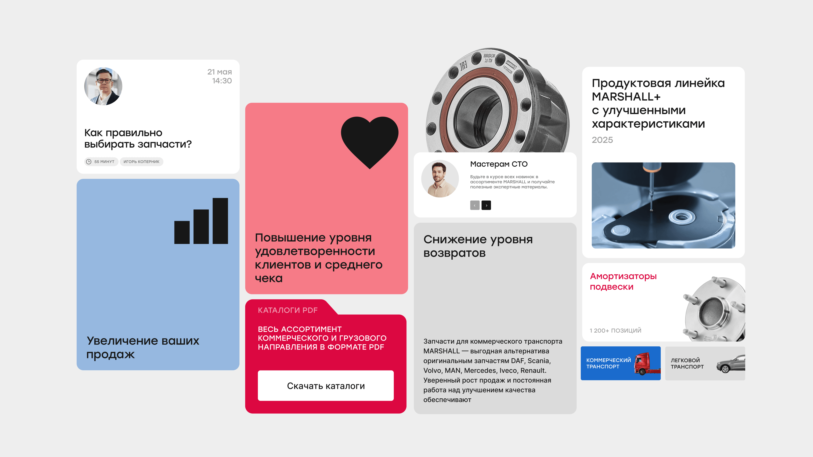
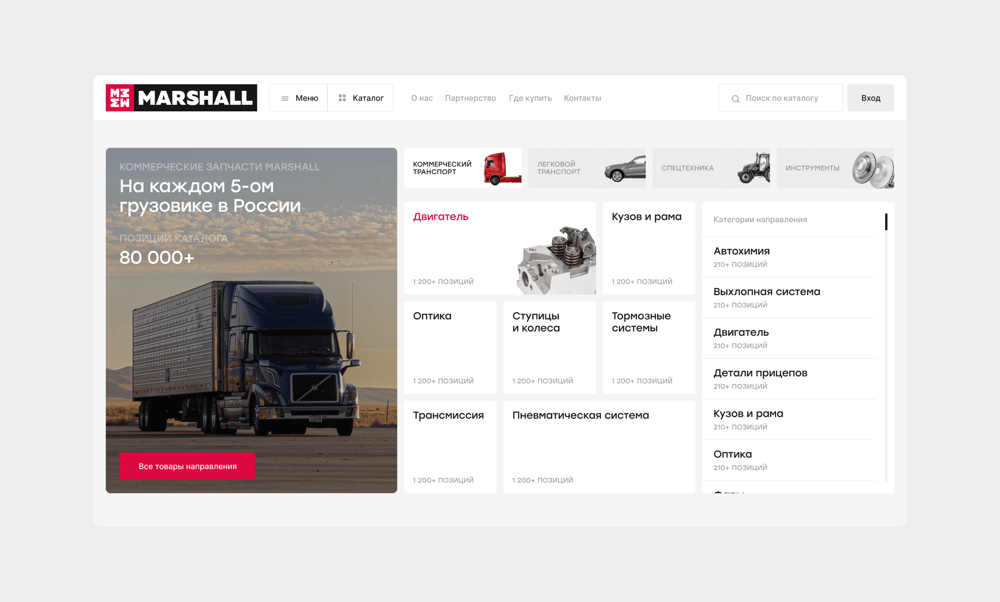
Задача
Клиент обратился с нетривиальной задачей: объединить три старых сайта в один большой. Итогом работы должен стать продукт, объединяющий в себе корпоративный сайт, интернет-магазин и личный кабинет. Подробнее про три существующих сайта:
1. Интернет-магазин «Корона Авто»
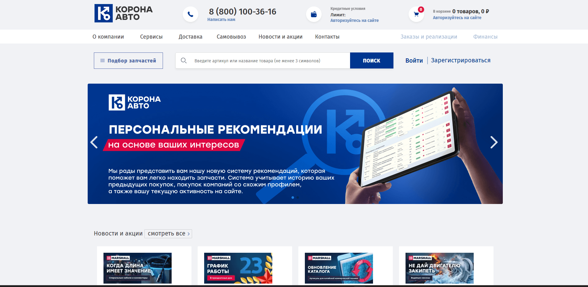
MARSHALL является не только производителем собственного бренда автозапчастей, но и дистрибьютором запчастей других производителей. Это дистрибьюторство осуществляется на отдельном сайте «Корона Авто». Тут продаются запчасти MARSHALL и других брендов.
2. Интернет-магазин «MARSHALL»
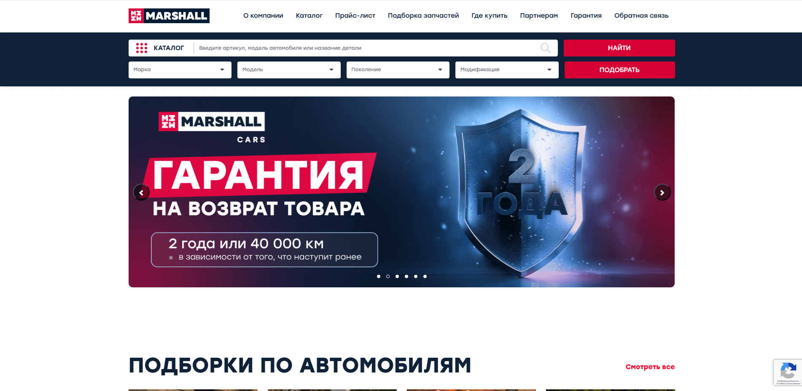
Еще один интернет-магазин, но теперь уже для продажи запчастей только собственного производства. Обладает более современным дизайном и качественным UX по сравнению с «Корона Авто».
3. Корпоративный сайт «MARSHALL»
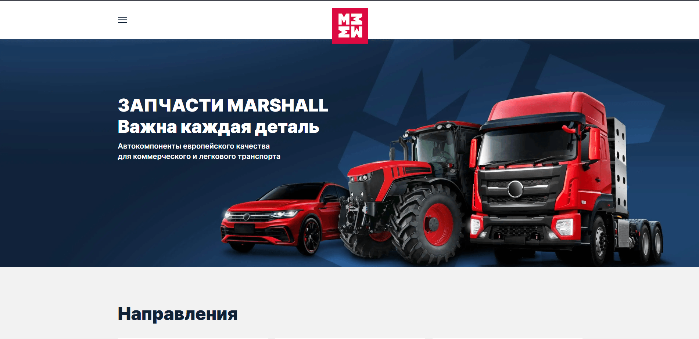
Сайт, который рассказывает о деятельности компании и направлениях работы. Будет ценен для тех, кто хочет просто узнать о MARSHALL как о бренде, заказ на этом сайте невозможен. Судя по всему, сделан по готовому шаблону.
Проблемы, возникшие из-за такой структуры
- пользователи путались между сайтами
- сложный путь покупки
- устаревший UX
- отсутствие единой продуктовой логики.
Цели проекта
- объединить три сайта в один продукт
- четко разделить направления деятельности компании
- показать масштаб бренда и производства
- улучшить пользовательский путь оформления заказа
- сделать сайт удобным как для конечных покупателей, так и для бизнеса
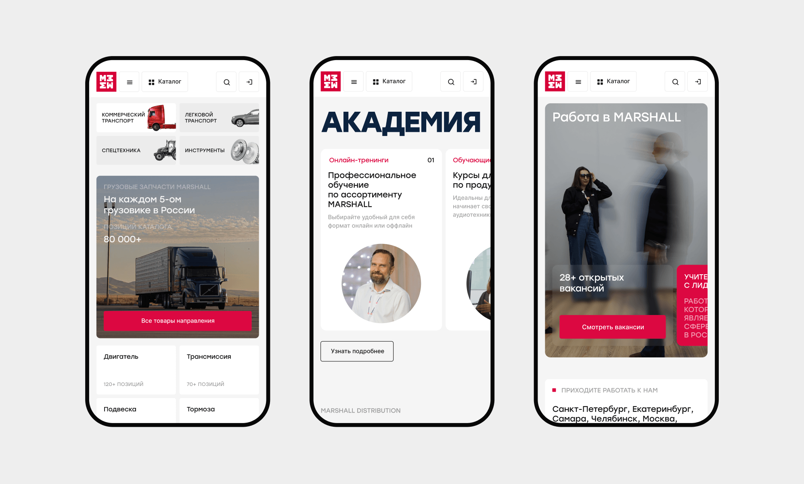
Мои обязанности
Я отвечал за продуктовую часть проекта:
- анализ конкурентов и рынка
- сегментацию аудитории
- пересборку структуры продукта
- проектирование пользовательских сценариев
- прототипирование 67 экранов
- дизайн интерфейса
- создание UI kit.
Исследование пользователей
Я выделил несколько ключевых сегментов пользователей:
1. Владельцы магазинов автозапчастей
Основные клиенты компании. Важны гибкие условия сотрудничества и прозрачная система
скидок.
2. Дистрибьюторы
Ищут надежного производителя и стабильные поставки.
3. Автолюбители
Хотят быстро подобрать качественную деталь по разумной цене.
4. Владельцы автосервисов
Ценят надежность деталей и скорость поставки.
Главные барьеры аудитории:
- недоверие к новым поставщикам
- страх получить некачественный товар
- сложность поиска нужной детали
- отсутствие прозрачной информации о наличии товара
Исследование рынка
Мы изучили сайты основных игроков рынка: Brembo, Trialli, Luzar.
Типичные проблемы индустрии:
- устаревший дизайн
- перегруженные карточки товара
- слабая навигация
- отсутствие удобного поиска.
При разработке интерфейса мы также ориентировались на лучшие практики крупных e-commerce сервисов (Ozon, Lamoda, Яндекс Маркет).
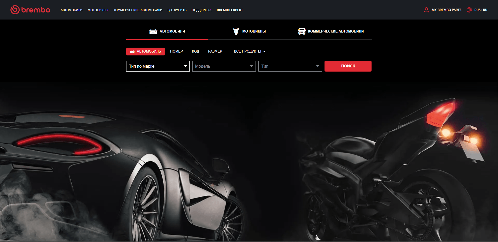
Инсайты после исследований
После исследования мы выделили три ключевых инсайта:
- пользователи привыкли искать детали по артикулу
- карточки товаров в нише перегружены информацией
- большинство пользователей покупают оптом.
Структура продукта
На основе анализа была полностью пересобрана структура сайта.
Мы разработали новую mind map продукта, которая позволила объединить корпоративный сайт, магазин и личный кабинет в единую систему.
После согласования структуры я приступил к прототипированию.
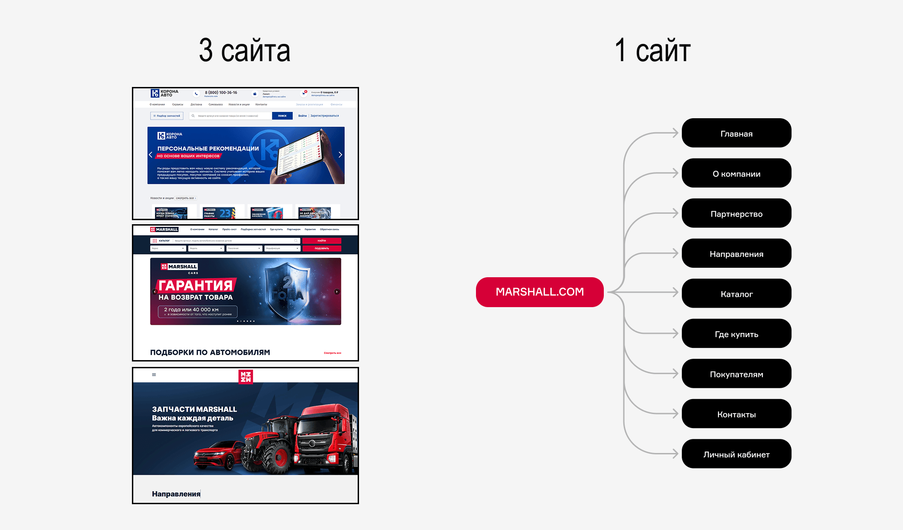
Ключевые решения
Новая карточка товара
Самая важная часть сайта. Одно ее изменение способно увеличить средний чек и повысить конверсию в корзину.
На старом сайте карточка была перегружена информацией и имела непривычный вид. Было ощущение, что ты уже в корзине, а не на карточке. Для теста мы попросили небольшую группу людей оформить заказ на сайте «Корона Авто». Для этого заказчик предоставил нам тестовые аккаунты.
При открытии карточки товара, пользователям потребовалось время, чтобы сориентироваться куда они попали. До целевого действия (Добавление в корзину) требовалось от 15 до 20 секунд.
Я предложил более понятную структуру:
- изображение товара
- ключевые характеристики
- цена и покупка
- способы доставки.
В обновленном варианте карточка имеет более понятный и привычный для пользователя вид, поэтому нам удалось сократить время ЦД до 8 секунд.
Клиент привык к старому формату карточки товара и сначала не принял новый вариант. После серии обсуждений и аргументации UX-паттернами из e-commerce аналогов, решение было согласовано.

Добавление в корзину: 20 секунд → 8 секунд
Ускорение покупки
Путем исследования мы поняли, что большое количество пользователей уже «на автомате» оформляют заказ. Поэтому нужно сократить флоу от карточки до оформленного заказа.
Чтобы сократить путь покупки, я добавил:
- выбор способа доставки прямо в карточке товара
- гибкую настройку доставки для каждого товара
- трехэтапный процесс оформления заказа.
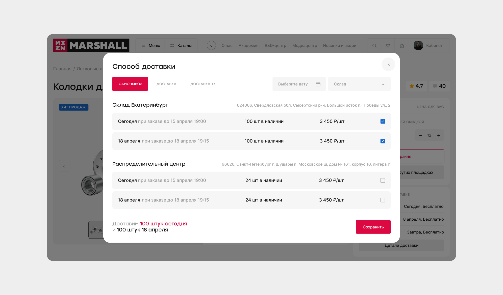
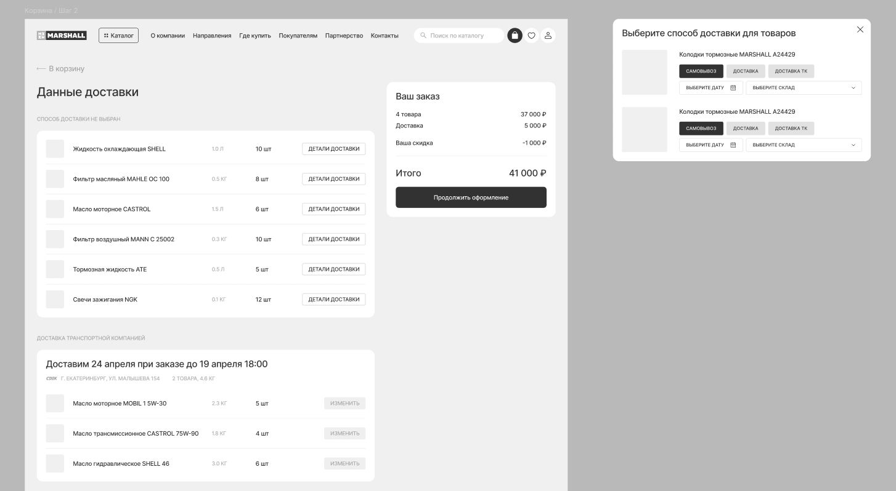
Флоу до покупки: 5 действий → 3 действия
Прозрачная информация о наличии
Информация о наличии доступна прямо в карточке товара. Достаточно нажать кнопку и откроется большой попап с подробной информацией.
Дизайн
Мы разработали три концепции интерфейса.
Клиент выбрал концепт в bento-стиле, который легко масштабируется на разные разделы сайта. Тем не менее, мы использовали и «смелые» решения с необычной версткой и повествованием.
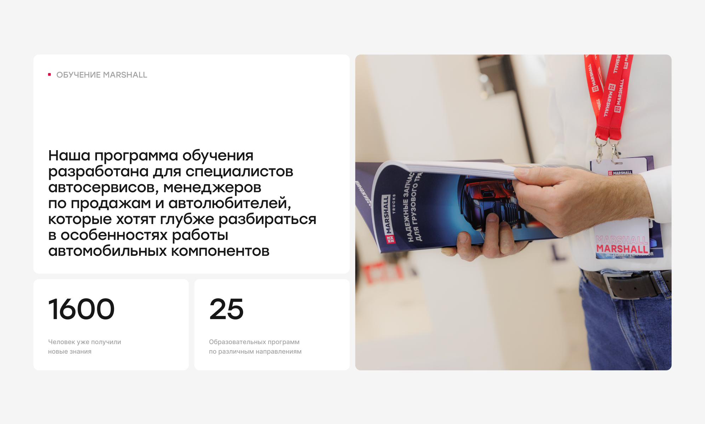
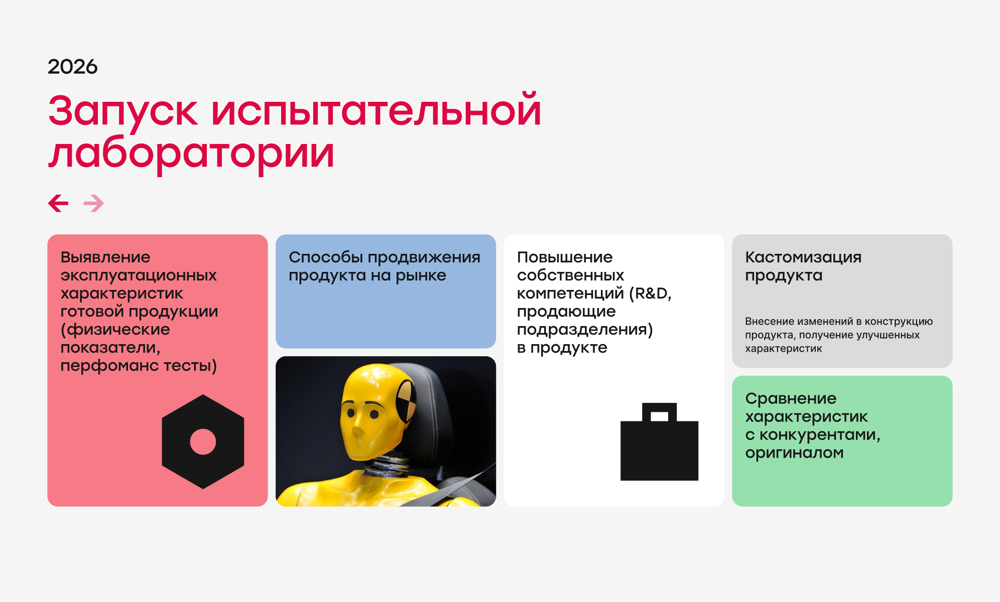
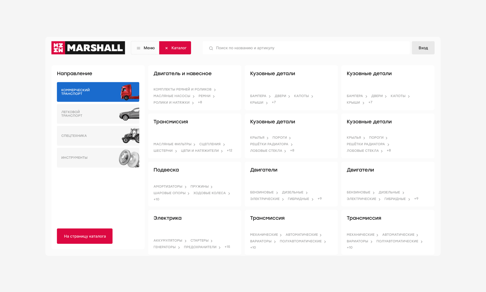
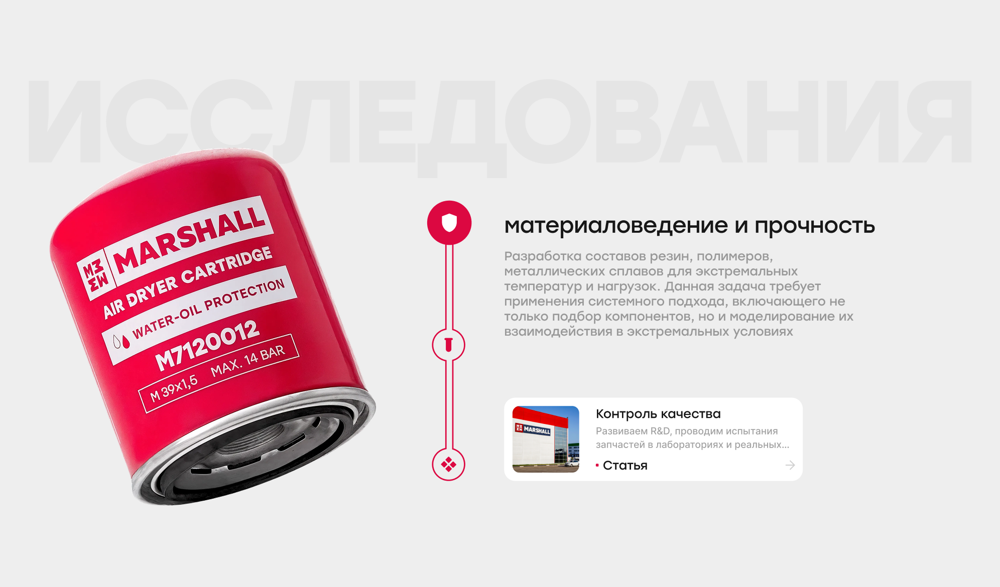
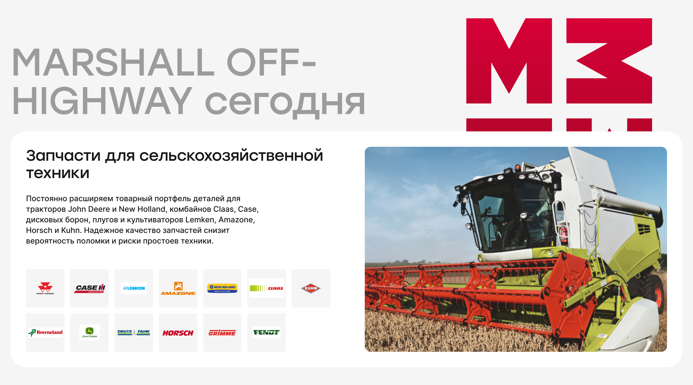
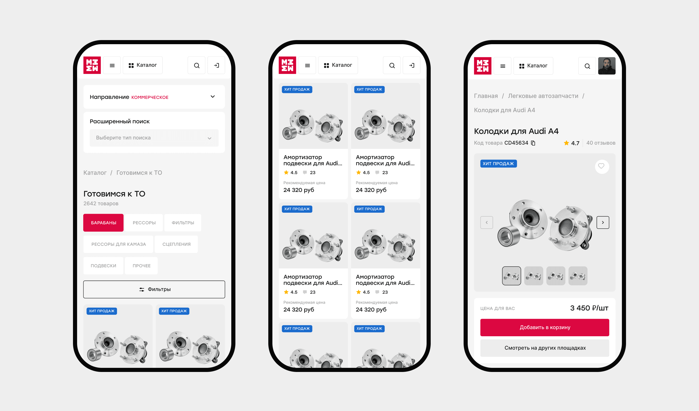
UI Kit
Для передачи макетов разработчикам я создал UI kit из 220 элементов, включающий:
- компоненты интерфейса
- состояния элементов
- интеракции и анимации.

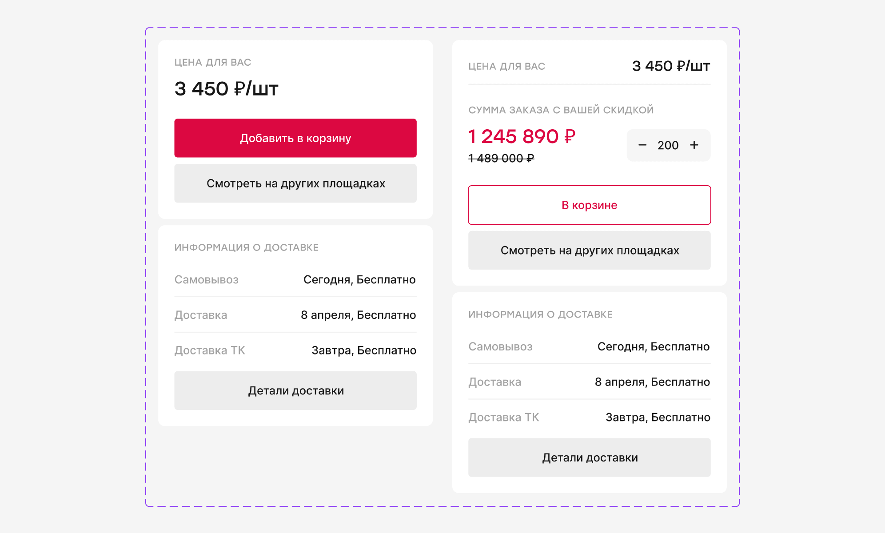
Результат
3 сайта → 1 сервис
67 экранов
220 компонентов
5 шагов покупки → 3 шага покупки
добавление в корзину: 20 секунд → 8 секунд
улучшена навигация и структура продукта
упрощен поиск и покупка автозапчастей
с нуля создана масштабируемая дизайн-система
Следующий кейс